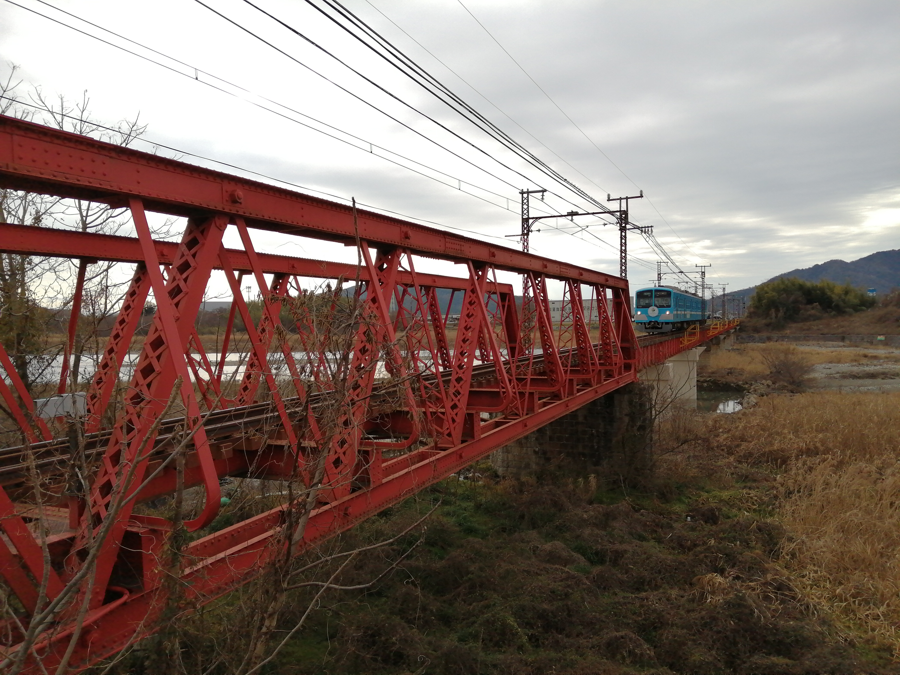
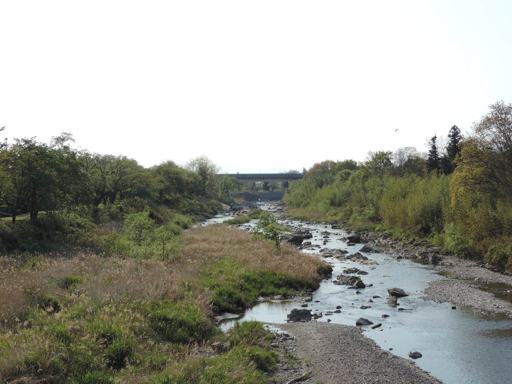

大阪府 島本町
名酒を育てる、山と川。
「山崎」が生まれる場所には、理由がある。
この町の話を読む車窓写真：michikusa（2026年9月撮影）
素通りの街 / 東海道新幹線
東京から新大阪まで、75の市区町村。そのうち58には、新幹線の駅がありません。
窓の向こうも、トンネルの上も。
いつも通り過ぎていた町の、知らなかった話を見つける旅へ。
背景地図を読み込めません。線路と下の町ボタンから楽しめます。
東京→新大阪147分のモデルを早送りします。現在地・実際の列車位置ではありません。
横に動かして、気になる区間を選べます。帯の幅＝通過時間（1秒＝2px）。
● 駅なし● 新幹線駅あり● のぞみ停車駅あり
147分モデルの時間です。トンネル内を含み、景色が見える秒数ではありません。同じ町に入り直すと帯は別区間になります。
地図の目印は各自治体の通過位置。写真はその土地の風景で、すべてが車窓から見えるわけではありません。
通り道から、ひとつの話へ
地図を止めて、読む寄り道。気になる一話からどうぞ。
大阪府 島本町
「山崎」が生まれる場所には、理由がある。
この町の話を読む車窓写真：michikusa（2026年9月撮影）

静岡県 函南町
丹那牛乳と、鉄道が変えた暮らし。
この町の話を読む写真：Batholith / Public Domain · トリミング表示

愛知県 西尾市
黒い覆いの下で始まる、西尾の抹茶。
この町の話を読む
岐阜県 関ケ原町
合戦の町を、道の歴史から眺める。
この町の話を読む写真：Saigen Jiro / CC0 1.0 · トリミング表示

滋賀県 愛荘町
誰でも渡れる橋を、どう実現したのか。
この町の話を読む →Kurage5555 / CC BY-SA 4.0 · 表示枠でトリミング

滋賀県 甲良町
地下の用水と、地上のせせらぎをつなぐ。
この町の話を読む →運動会プロテインパワー / CC BY-SA 4.0 · 表示枠でトリミング
素通りの、その先へ
気になった町には、次の旅で。
土地の味を取り寄せたり、ふるさと納税でつながったり。
それぞれの読み物の先に、小さな寄り道を用意しています。
東京〜新大阪のルートを市区町村ごとに区切った地図です。走行軌跡をもとにした線形と自治体判定を使用。通過時間は東京〜新大阪147分のモデルで、トンネル内を含みます。実際の所要時間や、景色が見える時間ではありません。行政界付近の短い通過は、ルートと境界の精度によって変わります。
背景地図：国土地理院・地理院タイル。写真の撮影者と利用条件は各カード・記事に記載。